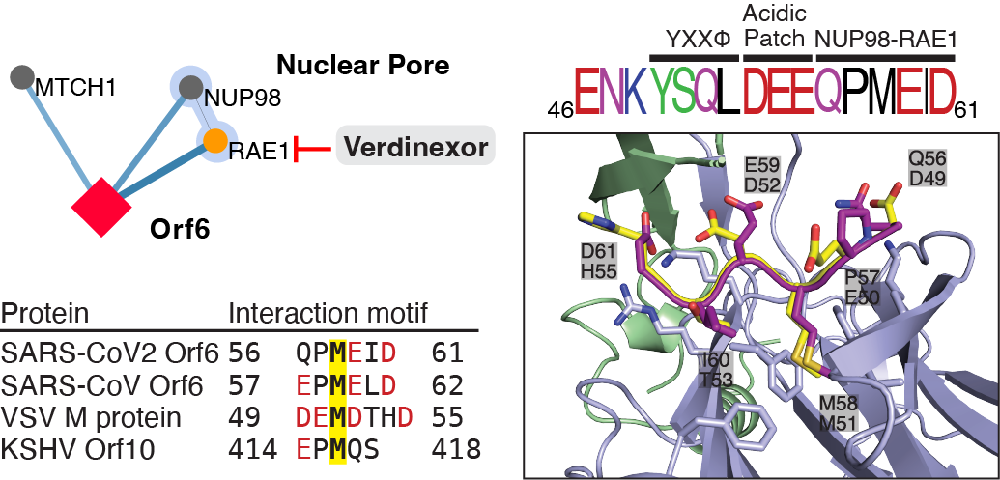
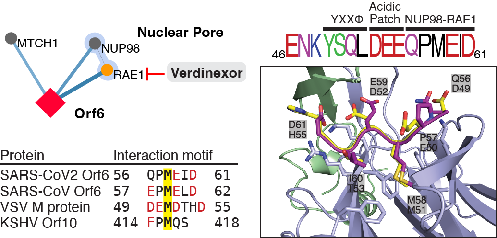

Publications¶
A complete allosteric map of a GTPase switch in its native network.¶
bioRxiv (2022)
Mathy CJP, Mishra P, Flynn JM, Perica T, Mavor D, Bolon DNA*, & Kortemme T*
* co-corresponding authors


Systems-level effects of allosteric perturbations to a model molecular switch.¶
Nature (2021)
Perica T*, Mathy CJP*, Xu J, Jang GΜ, Zhang Y, Kaake R, Ollikainen N, Braberg H, Swaney DL, Lambright DG, Kelly MJS, Krogan NJ, & Kortemme T
* co-first authors
Journal link | Pubmed link | Paper PDF | Supplement PDF
{kind=link}

A proposed workflow for proactive virus surveillance and prediction of variants for vaccine design.¶
PLoS Computational Biology (2021)
Baker JJ, Mathy CJP, & Schaletzky J
The Global Phosphorylation Landscape of SARS-CoV-2 Infection.¶
Cell (2020)
Bouhaddou M, Memon D, Meyer B, White KM, Rezelj VV, Correa Marrero M, Polacco BJ, Melnyk JE, Ulferts S, Kaake RM, Batra J, …, Mathy CJP, … Krogan NJ
A SARS-CoV-2 protein interaction map reveals targets for drug repurposing.¶
Nature (2020)
Gordon DE, Jang GM, Bouhaddou M, Xu J, Obernier K, White KM, O’Meara MJ, Rezelj VV, …, Mathy CJP, … Krogan NJ.
Journal link | Pubmed link | Paper PDF | Supplement PDF
Our collaborators in the Krogan lab mapped the interactions between human and SARS-COV-2 proteins, and looked to our group for structural interpretation. I discovered a conserved interaction motif in the C-terminal end of Orf6 and modeled it with Rosetta (see figure, purple peptide), using as a template a previously solved crystal structure of the Nup98-Rae1 complex bound to a protein from an unrelated virus, VSV (Quan et al 2014). The analysis predicted a methionine in the viral motif was key to the interaction, and mutations to this methionine were later shown to disrupt Orf6 binding to the complex (Miorin et al 2020).
 

{kind=link}
Other work¶
My previous work on growth factor engineering in Jennifer Cochran’s lab was accepted for an undergraduate honors thesis:
Mathy, CJP (2016) Engineering the NK1 Fragment of the Human Hepatocyte Growth Factor for Dual Use as a Potent Agonist and a Gene Therapy Delivery Vehicle. Stanford Digital Repository | link